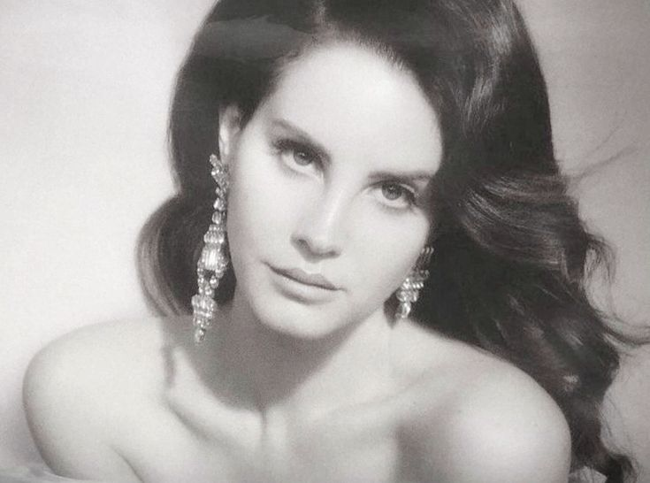
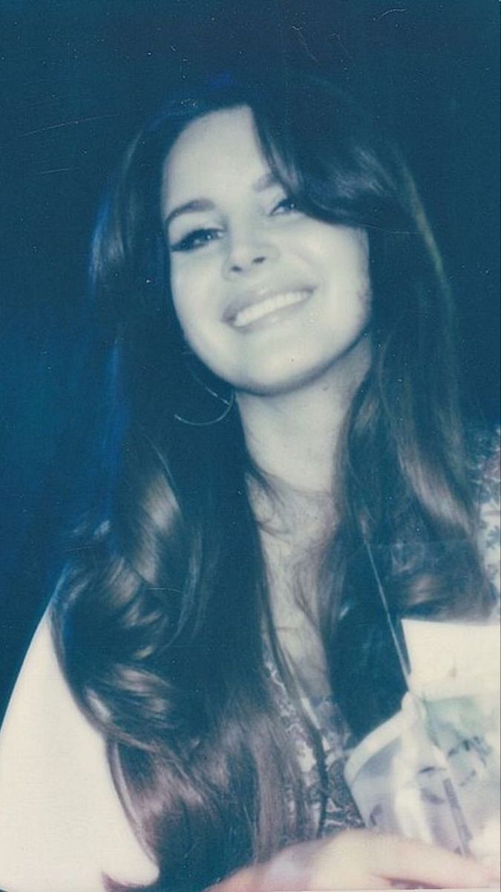

Elizabeth Woolridge Grant also known as Lana Del Rey is an American Singer-Songwriter who mainly makes music in the Alt-Pop/Rock Dream genre. She is heavily associated with the “coquette” aesthetic.
The start of her career began in 2005 when she moved from her home in Upstate New York to New York City. She created many projects but her career jump started in 2011 when her song "Video Games" blew up. She signed with her labels Interscope and Polydor shortly after and released one of her first albums Born to Die in 2012.
In Lana Del Reys career she has released 9 studio albums. Starting with her self titled which isn't on many platforms. One of her most popular being Born To Die in 2012. Then releasing Paradise also in 2012. Then Ultraviolence in 2014. Honeymoon in 2015, Lust for Life in 2017. Normal Rockwell in 2019. Blue Banisters in 2021. And her most recent titled Did you know that there is a tunnel under Ocean Blvd. in 2023.
In her career, Lana Del Rey has been nominated for 50+ awards and has won 14 awards. she hasn't won any grammys but has had 11 Grammy nominations for awards like "Best Pop Vocal Album" or "Album of the Year". One of her biggest awards was Woman of the Year in 2012.
As Lana Del Rey is a wonderful artist! There are more artists out there like MF DOOM and even Joji. Check out these links to learn more about them!